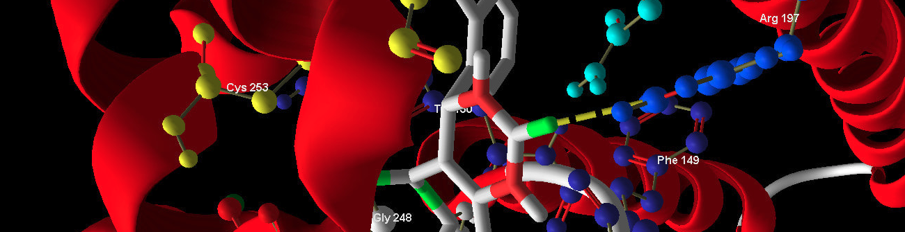
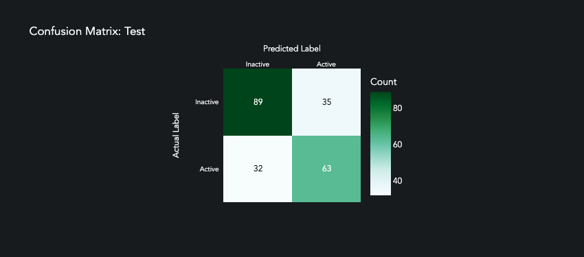
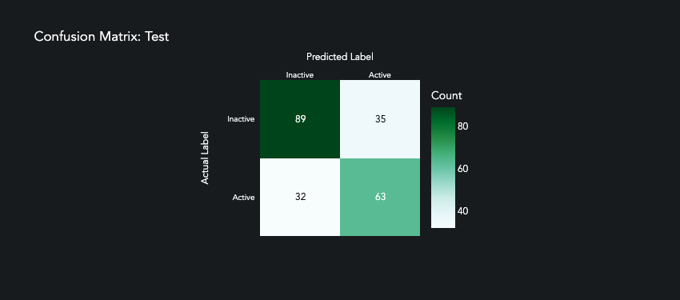

Feature Importance for Drug Discovery
In silico interpretation of compound selection using permuted feature importance of neural networks to rank High Throughput Screening (HTS) criteria, and identify 2 compounds (out of 57,546) with 95% confidence of target activation.

Context
This dataset is comprised of:
Features - 155 structural screening criteria for each compound.
Labels - whether or not the MAPK target is activated or inactivated by the compound.
Source: PubChem Bioassay from Scripps Research Institute Molecular Screening Center. https://archive.ics.uci.edu/ml/datasets/PubChem+Bioassay+Data
The purpose of this analysis is to use permuted feature importance to understand which chemical structures are driving the activation of the target.
[158]:
import pandas as pd
df = pd.read_parquet("MAPK_bioassay.parquet")
[158]:
from aiqc.orm import Dataset
shared_dataset = Dataset.Tabular.from_df(df)
Exploration
Since we have so many columns, we will examine their variation en masse in order to determine how we want to encode them.
[165]:
features = df.columns.tolist()
features.remove('Outcome')
features_binary = []
features_nonbinary = []
for col in features:
values = len(df[col].value_counts().tolist())
if (values == 1):
pass #no variation
elif (values == 2):
features_binary.append(col)
else:
# None appeared ordinal.
features_nonbinary.append(col)
print(f"Binary Features = {len(features_binary)} ")
print(f"Non-binary Features = {len(features_nonbinary)} ")
Binary Features = 123
Non-binary Features = 31
Pipeline
Reference High-Level API Docs for more information.
[4]:
from aiqc.mlops import Pipeline, Input, Target, Stratifier
from sklearn.preprocessing import LabelBinarizer, OrdinalEncoder, StandardScaler
[ ]:
pipeline = Pipeline(
Input(
dataset = shared_dataset,
encoders = [
Input.Encoder(OrdinalEncoder(), columns=features_binary),
Input.Encoder(StandardScaler(), columns=features_nonbinary)
]
),
Target(
dataset = shared_dataset
, column = 'Outcome'
, encoder = Target.Encoder(LabelBinarizer())
),
Stratifier(size_test=0.26)
)
Modeling
Reference High-Level API Docs for more information.
[37]:
from aiqc.mlops import Experiment, Architecture, Trainer
from aiqc.utils.tensorflow import TrainingCallback
import tensorflow as tf
from tensorflow.keras import layers as l
[39]:
def fn_build(features_shape, label_shape, **hp):
m = tf.keras.models.Sequential()
m.add(l.Input(shape=features_shape))
# First hidden layer.
m.add(l.Dense(hp['first_neurons'], kernel_initializer=hp['init']))
m.add(l.BatchNormalization())
m.add(l.Activation(hp['activation']))
m.add(l.Dropout(hp['drop_rate']))
# Second hidden layer.
if (hp['second_layer']==True):
m.add(l.Dense(hp['after_neurons'], kernel_initializer=hp['init']))
m.add(l.BatchNormalization())
m.add(l.Activation(hp['activation']))
m.add(l.Dropout(hp['drop_rate']))
if (hp['third_layer']==True):
m.add(l.Dense(hp['after_neurons'], kernel_initializer=hp['init']))
m.add(l.BatchNormalization())
m.add(l.Activation(hp['activation']))
m.add(l.Dropout(hp['drop_rate']))
if (hp['fourth_layer']==True):
m.add(l.Dense(hp['after_neurons'], kernel_initializer=hp['init']))
m.add(l.BatchNormalization())
m.add(l.Activation(hp['activation']))
m.add(l.Dropout(hp['drop_rate']))
# Output layer
m.add(l.Dense(units=label_shape[0], activation='sigmoid', kernel_initializer='glorot_uniform'))
return m
[41]:
def fn_train(
model, loser, optimizer,
train_features, train_label,
eval_features, eval_label,
**hp
):
model.compile(
loss = loser
, optimizer = optimizer
, metrics = ['accuracy', tf.keras.metrics.Precision()]
)
# Early stopping.
metric_cuttoffs = [
{"metric":"val_precision", "cutoff":0.75, "above_or_below":"above"},
]
cutoffs = TrainingCallback.MetricCutoff(metric_cuttoffs)
model.fit(
train_features, train_label
, validation_data = (eval_features, eval_label)
, verbose = 0
, batch_size = hp['batch_size']
, epochs = hp['epochs']
, callbacks = [tf.keras.callbacks.History()]
)
return model
[42]:
def fn_lose(**hp):
if (hp['loss_imbalanced']==True):
loser = tf.keras.losses.BinaryFocalCrossentropy(gamma=hp['gamma'], from_logits=False)
else:
loser = tf.keras.losses.BinaryCrossentropy()
return loser
[43]:
def fn_optimize(**hp):
optimizer = tf.keras.optimizers.Adamax(hp['learning_rate'])
return optimizer
[83]:
hyperparameters = dict(
first_neurons = [120]
, after_neurons = [12]
, second_layer = [True, False]
, third_layer = [False]
, fourth_layer = [False]
, activation = ['relu']
, init = ['he_uniform']
, epochs = [20]
, batch_size = [5]
, drop_rate = [0.4]
, gamma = [1.0]
, loss_imbalanced = [True, False]
, learning_rate = [0.01]
)
[84]:
queue = Experiment(
Architecture(
library = "keras"
, analysis_type = "classification_binary"
, fn_build = fn_build
, fn_train = fn_train
, fn_optimize = fn_optimize
, hyperparameters = hyperparameters
),
Trainer(
pipeline = pipeline
, repeat_count = 2
, repeat_count = 3
, permute_count = 7
)
)
[85]:
queue.run_jobs()
🔮 Training Models 🔮: 100%|████████████████████████████████████████| 12/12 [07:44<00:00, 38.74s/it]
Now normally, I would say that these models are too overfit to be usable, but remember that we are interested in the features that drive active compound prediction. The fact that these models perform so similarly indicates that the signal coming from the features is strong, which is what we want. There is something there and we’ll use feature importance to find out what that is.
[334]:
queue.metrics_df(
selected_metrics = ['f1','precision']
, sort_by = 'f1'
, ascending = False
)
[334]:
| hyperparamcombo_id | job_id | repeat_index | predictor_id | split | f1 | precision | |
|---|---|---|---|---|---|---|---|
| 8 | 237 | 237 | 4 | 662 | train | 0.864569 | 0.831579 |
| 12 | 237 | 237 | 6 | 664 | train | 0.861295 | 0.802956 |
| 10 | 237 | 237 | 5 | 663 | train | 0.859155 | 0.849582 |
| 0 | 237 | 237 | 0 | 658 | train | 0.856390 | 0.796569 |
| 22 | 237 | 237 | 11 | 669 | train | 0.855989 | 0.811224 |
| 14 | 237 | 237 | 7 | 665 | train | 0.855153 | 0.836512 |
| 18 | 237 | 237 | 9 | 667 | train | 0.853521 | 0.844011 |
| 16 | 237 | 237 | 8 | 666 | train | 0.852735 | 0.839779 |
| 2 | 237 | 237 | 1 | 659 | train | 0.848837 | 0.866469 |
| 4 | 237 | 237 | 2 | 660 | train | 0.841629 | 0.894231 |
| 20 | 237 | 237 | 10 | 668 | train | 0.837274 | 0.817935 |
| 6 | 237 | 237 | 3 | 661 | train | 0.800628 | 0.891608 |
| 13 | 237 | 237 | 6 | 664 | test | 0.737255 | 0.717557 |
| 21 | 237 | 237 | 10 | 668 | test | 0.726562 | 0.704545 |
| 17 | 237 | 237 | 8 | 666 | test | 0.726531 | 0.735537 |
| 23 | 237 | 237 | 11 | 669 | test | 0.724528 | 0.680851 |
| 1 | 237 | 237 | 0 | 658 | test | 0.720307 | 0.686131 |
| 15 | 237 | 237 | 7 | 665 | test | 0.712551 | 0.715447 |
| 9 | 237 | 237 | 4 | 662 | test | 0.711462 | 0.697674 |
| 19 | 237 | 237 | 9 | 667 | test | 0.694561 | 0.721739 |
| 5 | 237 | 237 | 2 | 660 | test | 0.681223 | 0.742857 |
| 11 | 237 | 237 | 5 | 663 | test | 0.680328 | 0.691667 |
| 3 | 237 | 237 | 1 | 659 | test | 0.678112 | 0.724771 |
| 7 | 237 | 237 | 3 | 661 | test | 0.666667 | 0.782609 |
[136]:
id = 666
predictor = aiqc.Predictor.get_by_id(id)
prediction = predictor.predictions[0]
It’s not perfect, but overall we are observing the predictive pattern that we want from this model.
[ ]:
prediction.plot_confusion_matrix()
 

Interpretation
The Experiment.permute_count parameter determines how many times each feature is permuted and run back through the model. The median difference in loss is then compared to the baseline loss of the model.
[ ]:
prediction.plot_feature_importance(height=1000)

In comparison to traditional statistics, the heuristics of deep learning help us quantify the impact of subtle variation within the dataset.
Box plots appeared nearly identical.
T-tests did not rule all of these features to be significant.
Despite this, our model is able to achieve f1=0.726 and precision=0.735, which can help us rule out/in tens of thousands of future compounds. This suggests that the model is able to detect not only variation within a feature, but also interaction between features.
[ ]:
from scipy.stats import ttest_ind
active = df[df['Outcome']=='Active']
inactive = df[df['Outcome']=='Inactive']
top_6 = ['NumHBD','NumRot','WBN_LP_L_0.25','HBA_05_ARC','WBN_LP_H_1.00','WBN_EN_H_1.00']
for col in top_6:
ttest_sig = ttest_ind(active[col], inactive[col])[1]<0.05
px.box(df, x="Outcome", y=col, title=f"Significant P-value: {ttest_sig}", height=50).show()


Finally, our model enables us to determine which compounds most strongly fit these patterns based on the probability of their prediction.
[325]:
dfs = []
for split in ['train','test']:
sample_ids = splitset.samples[split]
sample_probabilities = prediction.probabilities[split]
samples = splitset.label.to_df(samples=sample_ids)
samples['Probability'] = sample_probabilities
samples['Compound_ID'] = sample_ids
samples = samples[samples['Probability'] >= 0.95]
samples = samples[samples['Outcome'] == 'Active']
dfs.append(samples)
pd.concat(dfs)
[325]:
| Outcome | Probability | Compound_ID | |
|---|---|---|---|
| 113 | Active | 0.977319 | 113 |
| 174 | Active | 0.964854 | 174 |
Across our entire dataset of 57,546 compounds, only 2 compounds exhibit over 95% probability of being active. If we trust the scientific relevance of these features, then these compounds are great candidates for the next phase.
Visualization & Interpretation
For more information on visualization of performance metrics, reference the Dashboard documentation.